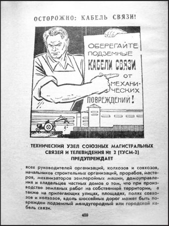

Страницы авторов "Тёмного леса"
Пишите нам! temnyjles@narod.ru
Нашел дома старый справочник городской телефонной сети г. Кисловодска. Потрепанный, "верой и правдой служивший" на протяжении многих лет - с 1983 года. Раскрыл его и. зачитался! Я и не мог подумать, что старый телефонный справочник сможет поведать столько интересного о моем городе, каким он был 30 лет назад, за год до моего рождения!
Многие коренные кисловодчане с ностальгией вспоминают те времена - середину 1980-х как период настоящего расцвета города-курорта. Город был совсем другим. Вроде бы тот же Кисловодск - да не тот. А какой? Давайте вспомним, давайте прогуляемся по страницам старого справочника.
Кисловодск 1980-х годов отличался тем, что сейчас называют развитой социальной инфраструктурой. Действовало множество учреждений здравоохранения, образования, культуры, бытового обслуживания и т.д. В 1983 году в городе было 14 общеобразовательных школ (в том числе 2 восьмилетние и 2 школы с филиалами), 3 вечерние школы, специальная школа-интернат N18, школьный детский дом санаторного типа, 2 медучилища и 2 ПТУ, музыкальная школа имени Р.М. Глиэра, художественная школа, 2 спортивные школы, а кроме них еще шахматная и школа плавания при стадионе "Трудовые резервы". Много в городе было детских садов. В общей сложности их насчитывалось 23, из которых один был санаторного типа. 11 детских садов принадлежали ведомствам: Курортному совету, тресту Кисловодскстрой, нарзанному заводу, санаторию Центросоюза, Курортпродторгу и даже 4-му Главному управлению Минздрава СССР.
Впечатляло и количество городских лечебных учреждений. Больниц было 4 (в том числе инфекционная, психоневрологическая и детская), 3 диспансера и 4 поликлиники (включая стоматологическую), женская консультация и родильный дом.
Сеть культурных учреждений города была также внушительна. В городе функционировали центральная городская библиотека с передвижным фондом и 5 филиалами, центральная детская библиотека, библиотека Горкома КПСС. Действовало 4 кинотеатра, в том числе широкоформатный кинотеатр "Россия". В городе также насчитывалось 10 клубов, не считая 4 санаторных. Среди них спортивно-технический ДОСААФ, детский клуб моряков, клуб туристов, всероссийского общества слепых. В городе находился один из лучших в стране парков культуры и отдыха (им. Ленинского Комсомола) с музеем космонавтики им. Ф.А. Цандера. Помимо музея космонавтики, в городе было еще 2 - филиал Ставропольского краеведческого музея (в здании кисловодской крепости) и Художественный музей Н.А. Ярошенко. Действовали и такие учреждения как дом культуры медработников, дом пионеров и школьников, дом санитарного просвещения и дом учителя. Здесь также нельзя обойти вниманием и учреждение министерства культуры РСФСР - Государственную филармонию на Кавказских Минеральных Водах с двумя концертными залами и музеем театральной и музыкальной культуры.
Бытовое обслуживание населения осуществляли дом быта и комбинат бытового обслуживания "Чародейка", завод краевого объединения "Ставрополькрайрембыттехника", более 30 ателье и мастерских по пошиву и ремонту одежды и обуви, 5 фотоателье и лаборатория цветной печати. Было также 2 бани: комбината "Чародейка" и финская "Сауна" при гостинице "Кавказ". При доме быта находились мастерские по ремонту часов, фотоаппаратов, кожгалантереи, ремонту и изготовлению ювелирных изделий и др. Кисловодский завод "Ставрополькрайрембыттехника" занимался не только ремонтом холодильников, пылесосов, швейных машин и других бытовых приборов, но также ремонтом и изготовлением ювелирных изделий. Комбинат разнобытовых услуг производственного объединения "Чародейка" включал в себя городскую баню, мехпрачечную, 2 салона красоты и сеть парикмахерских. При бане также были парикмахерская, маникюрный зал, массажный кабинет и др.
Торговая сеть Кисловодска тогда отличалась скромными масштабами, в сравнении с нынешней, хотя, думается, была более упорядочена и подконтрольна. Да и недостатка в количестве магазинов и других торговых точек горожанами не ощущалось. А еще следует отметить, что в городе работало 3 книжных магазина, ни один из которых до настоящего времени не дожил. Впрочем, экономика города держалась тогда не на розничной торговле, и действовал целый ряд предприятий, которые остались только в воспоминаниях старожилов. При этом важно заметить, что экологическое состояние тогдашнего города было в разы лучше сегодняшнего. В городе насчитывалось 6 заводов (в том числе винзавод Крайпотребсоюза и винзавод "Самтрест" министерства пищевой промышленности Грузинской ССР), более 10 фабрик, 4 промышленных комбината (стройматериалов, строительных изделий, хлебомакаронный и мясокомбинат). В городе действовали предприятия пищевого, сувенирного, скорняжно-мехового, мебельного, трикотажного производства и т.п.
Великолепно развитой была, разумеется, и курортная инфраструктура Кисловодска. Санаториев в Кисловодске насчитывалось 27, из которых 12 принадлежало Курортному совету. Санаторий "Колос" принадлежал двум колхозам Ставропольского края. Также функционировали ведомственные санатории: им. 10-летия Октября Управления делами ЦК КПСС, им. А.М. Горького Академии наук СССР, "Кавказ" министерства соцобеспечения РСФСР, "Красные Камни" 4-го Главного управления при Минздраве СССР, "Родник" Управления промышленности стройматериалов Мосгорисполкома, им. Семашко 4-го Главного управления при Минздраве Украинской ССР, "Узбекистан" 4-го Главного управления при Минздраве Узбекской ССР, "Центросоюз" Центрального союза потребительских обществ и др. Другими лечебными учреждениями курорта были Кардиологическая клиника им. В.И. Ленина Пятигорского НИИ курортологии и физиотерапии, Курортная больница зонального управления спецсанаториев и Курортная поликлиника с рентгенстанцией, биоклиматической станцией и медицинским пунктом "Храм Воздуха". И все-таки самым мощным лечебным учреждением курорта являлось Бальнеофизиотерапевтическое объединение Курортного совета, а сокращенно - БФО. К нему относились 3 ванных здания (Главные и Октябрьские нарзанные ванны, а также ванное здание с водолечебницей на проспекте Ленина, 30), ингаляторий, электролечебница, грязелечебница при санатории "Крепость", нарзанная галерея, плавательный бассейн в парке и др. А еще Курсовету принадлежала старейшая в стране аллергологическая научноисследовательская лаборатория. Лечебные учреждения курорта дополнялись шестью диетическими столовыми объединения диетстоловых Курортного совета.
Были у курорта и свои культурные учреждения: дом культуры, курортная библиотека с великолепным медицинским отделом и выставка "История курорта" рядом с нарзанной галереей.
Немало в Кисловодске было пансионатов. Колхозных насчитывалось 6 (принадлежали различным колхозам Ставропольского и Краснодарского краев, и колхозу "Украина" Крымской области Украинской ССР). Ведомственных - столько же (среди них "Горное эхо" крайкома Союза работников сельского хозяйства и "Кругозор" Министерства автомобильного транспорта). Среди ведомственных также был пансионат-пионерлагерь "Звездочка" крайкома Союза работников госучреждений. Еще было 4 пансионата Курортной поликлиники и пансионат санатория им. Г.К. Орджоникидзе. А вот гостиниц насчитывалось гораздо меньше. Не считая гостиниц цирка и филармонии, были гостиница "Кавказ" с филиалом ("Нарзан"), гостиница трансагентства и 3 гостиницы ВДСО "Трудовые резервы" - одна при Олимпийском комплексе и две - у стадиона. Но поскольку Кисловодск посещался ежегодно многими десятками тысяч туристов, следовавших по маршрутам ВЦСПС, к их услугам был выстроен еще туристско-гостиничный комплекс "Велинград" из 3 гостиниц и турбаза "Радуга" краевого совета по туризму и экскурсиям.
По количеству ресторанов и кафе тогдашний Кисловодск уступал сегодняшнему. Все они принадлежали тресту ресторанов и столовых главкурортторга. Ресторанов было всего 9 вместе с "Замком". Некоторые из них ("Родопи", "Храм воздуха") давно уже не функционируют. Кисловодские кафе, общим числом больше 20, принадлежали ресторанам "Театральный", "Чайка", "Кисловодск", "Храм воздуха", "Кавказ", а также турбазе "Велинград" и столовой N1. Действовало также 2 шашлычные и одна рюмочная.
Справочник поведал и о масштабах телефонной сети города. Оказывается, помимо служебных, в Кисловодске насчитывалось более 10 тысяч домашних телефонов и более 200 таксофонов по всему городу. Для небольшого города - это был весьма высокий показатель.
А еще я обнаружил в справочнике весьма занимательную рекламу. И пусть она кажется нам, привыкшим к глянцу и ярким краскам, невзрачной, но даже в такое вроде бы "нерыночное" время как советское, она оказалась преимущественно коммерческой. И все же, начинает рекламный отдел объявление: "Осторожно: Кабель связи!". Грозный кабельщик указывает могучей рукой на слова: "Оберегайте подземные кабели связи от механических повреждений!". Затем уже Госстрах рекламирует услугу по страхованию к бракосочетанию: "В доме - радость! В доме - свадьба! Заключив договор страхования, родители, бабушки, дедушки своевременно позаботятся о подарке к этому торжественному дню". Магазин "Топаз" зазывает приобрести товары: "Бусы - самый распространенный вид женских украшений, изготовлены они в СССР и Индии из аметиста, золотистого кварца, граната, сердолика, хризолита, агата, тигрового глаза, лазурита. Бусы из натуральных камней всегда модны, прекрасно дополняют любое платье". Кисловодский автовокзал приглашает пассажиров пользоваться его услугами, ведь "от автовокзала ежедневно отправляется более 100 автобусов по междугородным и пригородным маршрутам в направлении гг. Ставрополя, Буденновска, Орджоникидзе и Махачкалы, Ростова и Краснодара, Черкесска и Теберды, Тбилиси и Еревана". И в том же духе завлекает потребителя реклама кинотеатров, комбината "Чародейка", городской бани и т.д. и т.п.
Вот сколько всего разного и интересного о Кисловодске, каким он был 30 лет назад, поведал старый телефонный справочник.
|  | Осторожно: Кабель связи! Социальная реклама из справочника абонентов городской телефонной сети Кисловодска. 1983 г. |
Вячеслав Яновский. Неакадемические сочинения